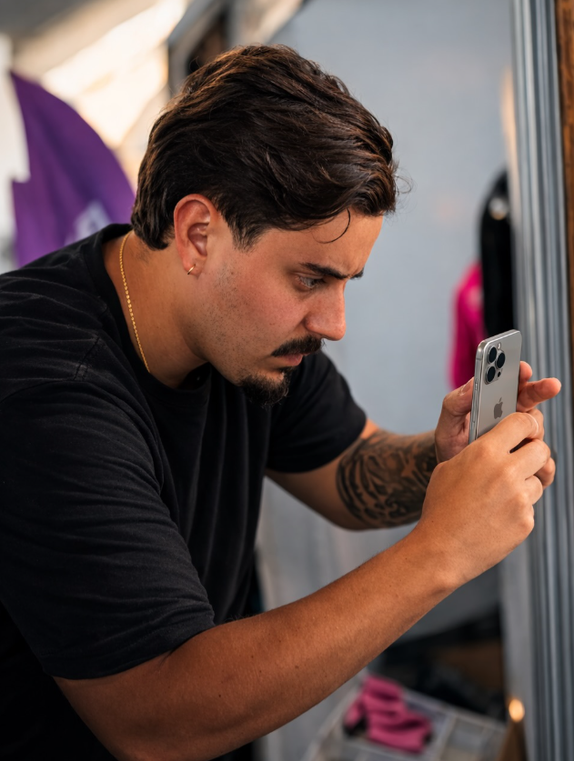

Produção audiovisual para empresas, marcas, profissionais e eventos. Transformamos ideias e momentos em vídeos com identidade, qualidade visual e intenção.
Produção audiovisual para marcas, profissionais e eventos.

Meu nome é Gustavo Melo. Sou videomaker, natural de Barra Mansa, no Rio de Janeiro, e há 7 anos trabalho com produção audiovisual, ajudando marcas, empresas e profissionais a apresentarem suas ideias por meio de vídeos.
Ao longo dessa trajetória, já atendi mais de 200 clientes, participando de projetos com diferentes objetivos, estilos e necessidades. Essa experiência me ensinou que cada trabalho exige atenção aos detalhes, compreensão da proposta e cuidado em todas as etapas da produção.
Meu trabalho vai além de registrar imagens. Busco entender o que precisa ser comunicado e encontrar a melhor maneira de transformar essa mensagem em conteúdo audiovisual, seja para fortalecer a presença de uma marca, apresentar um produto, divulgar um serviço ou registrar um evento especial.
Com atuação em Barra Mansa e em toda a região, desenvolvo projetos que buscam valorizar cada história, cada negócio e cada ocasião.
Cada negócio tem necessidades diferentes. Por isso, desenvolvemos produções audiovisuais de acordo com o objetivo, o formato e a mensagem que precisam ser transmitidos. Do planejamento à finalização, cada etapa é pensada para entregar um conteúdo alinhado à proposta do projeto.
Produção de imagens para empresas, marcas e profissionais que desejam apresentar seus produtos, serviços e espaços com qualidade visual e profissionalismo.
Montagem, ritmo, tratamento visual, trilhas, legendas e finalização para transformar materiais gravados em vídeos preparados para publicação.
Vídeos para Reels e outras plataformas digitais, com formatos adequados à comunicação da marca e aos objetivos de cada publicação.
Registro audiovisual de eventos corporativos, celebrações, encontros, inaugurações e outras ocasiões importantes com qualidade profissional.
Produções para apresentar empresas, divulgar produtos, comunicar serviços e fortalecer a identidade de marcas com uma abordagem visual alinhada à proposta de cada negócio.
Cada produção representa uma oportunidade de transformar uma ideia em uma experiência visual. Explore nossos trabalhos diretamente no Instagram oficial, onde publicamos regularmente produções reais, bastidores e diferentes estilos de edição.
Uma produção audiovisual envolve muito mais do que equipamentos e edição. É preciso compreender o que será comunicado, como a mensagem deve ser apresentada e quais escolhas visuais fazem sentido para cada projeto.
Uma trajetória dedicada à produção audiovisual, desenvolvendo projetos com diferentes objetivos, linguagens e necessidades.
Experiência construída por meio de projetos para clientes que confiaram suas ideias, marcas e momentos ao meu trabalho.
Com base em Barra Mansa, realizo projetos em toda a região, alinhando cada produção às necessidades do cliente e às características do trabalho.
Do planejamento à edição, cada etapa é conduzida com foco na qualidade visual, na clareza da comunicação e no propósito de cada projeto.
Um processo organizado facilita a tomada de decisões e ajuda a garantir que todos estejam alinhados durante a produção. Por isso, cada projeto começa com uma conversa para compreender a necessidade do cliente e definir os próximos passos.
Entendemos sua marca, o objetivo do vídeo, o público que deseja alcançar e o tipo de material que precisa produzir.
Alinhamos a proposta criativa, os formatos, as referências, o escopo e os detalhes necessários para a execução.
Realizamos a captação conforme o planejamento aprovado ou iniciamos a edição a partir dos materiais disponibilizados.
Finalizamos o material conforme o escopo combinado, realizamos os ajustes e entregamos nos formatos acordados.
Você já tem uma ideia, precisa produzir conteúdos com frequência ou quer apresentar sua empresa de uma nova maneira? Conte o que tem em mente.
FALAR COM GUSTAVO NO WHATSAPP Atendimento em Barra Mansa e região.Tudo o que você precisa saber antes de iniciar sua produção audiovisual.
Fale diretamente com o Gustavo e tire todas as suas dúvidas sobre seu projeto.
PERGUNTAR PELO WHATSAPP